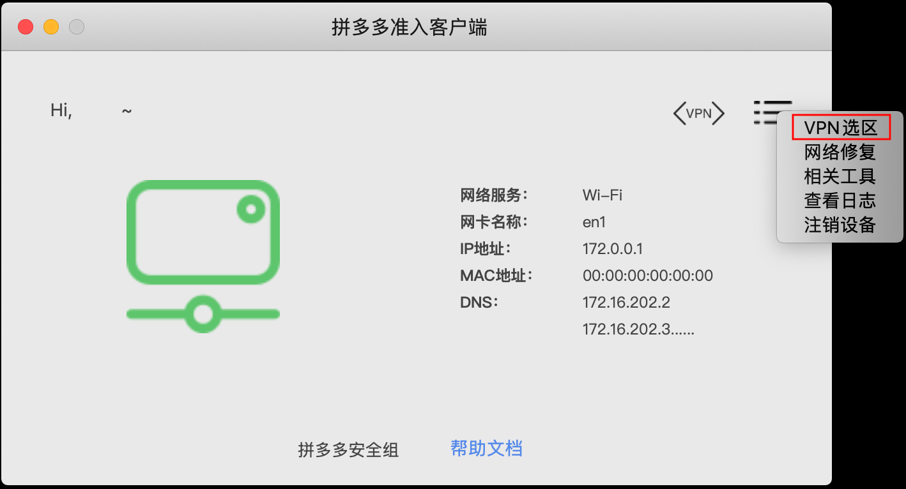

准入客户端帮助文档
扫码注册/登录
扫码注册/登录，使用手机上的Knock扫一扫并授权注册登录
PIN+OTP注册/登录
在下图对应区域分别输入花名拼音、6位短密码、6位动态密码。注意：花名不要带回车符等
点击下图红色区域注销设备
连入办公网络
点击下图按钮连入办公网络
下图为成功连入办公网络示例
连入VPN
点击下图按钮连入VPN
下图为成功连入VPN示例切换VPN区域-入口1
图中红色区域连续快速点击5次，出现选取界面，默认为自动选区，根据个人需要选区
切换VPN区域-入口2
主界面菜单栏点击VPN选区
下图为准入提供的VPN区域，包括：自动选区、2区等等
查看准入版本
点击图中红色区域按钮，出现版本号说明
如下图为准入版本
检查是否为最新版准入
点击图中红色区域按钮，如果返回更新错误，一般情况下为此时是内测时段暂时关闭更新通道
查看本地准入实时日志
入口 1：准入菜单栏，stargate->查看本地日志
入口 2：从准入主界面进入，入口如下图所示
网络修复入口
入口 1：准入菜单栏，help->网络修复
入口 2：从准入主界面进入，入口如下图所示

网络修复主界面
网络修复可以帮助用户快速定位和解决问题
科学上网入口
入口 1：准入菜单栏，help->网络工具
入口 2：从准入主界面进入，入口如下图所示
设置科学上网
点击下图按钮，设置科学上网

点击下图按钮，取消科学上网

清空系统DNS数据
当网络有问题时，可尝试点击下图按钮，清空系统DNS数据
强制注销设备（将导致准入重启）入口
入口 1：准入菜单栏，help->注销准入
入口 2：准入菜单栏，help->相关工具
入口 2：从准入主界面进入，入口如下图所示
强制注销设备
当出现无法登录、非法请求等情况时，可尝试强制注销设备，并重新注册
公用设备登入
在注册界面进入，如下图
登入失败界面
请根据下图中提示操作